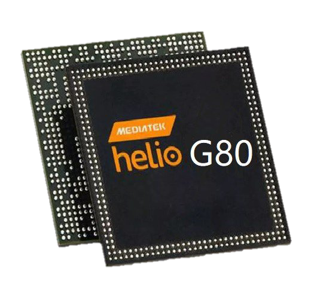

Pantalla
El Redmi 9 de Xiaomi ofrece al consumidor una experiencia visual de grandes dimensiones. Estamos ante una pantalla de 6.53 pulgadas con resolución FHD+ (2340x1080 píxeles), lo que nos deja una densidad de 394 ppp, muy buena para este tipo de teléfono y su gama. La pantalla viene protegida con Gorilla Glass 3.
Cámara
- Resolución: 13 megapíxeles.
- Tipo de sensor: 13MP OmniVision OV13B10 sensor
- Apertura: f/2.2.
- Enfoque automático: Sí, utiliza enfoque automático de detección de fase (PDAF).
- Otras características: HDR, panorama, modo de belleza, reconocimiento de escenas AI.


Rendimiento
Experimenta la potencia sin límites con el MediaTek Helio G80. Con ocho núcleos, este procesador impulsa tu dispositivo a nuevas alturas. Acompañado por la GPU Mali-G52 MC2, disfruta de gráficos impresionantes para una experiencia visual inigualable. ¡Rinde al máximo!
-

Conectividad
1. Redes Móviles 4G LTE: El Xiaomi Redmi 9 ofrece compatibilidad con redes 4G LTE, proporcionando una conectividad rápida y eficiente [source].
2. Wi-Fi 5G/2.4G: Equipado con capacidades Wi-Fi, permitiendo la conexión a redes inalámbricas para una navegación fluida [source].
3. Bluetooth 5.0: El dispositivo incorpora tecnología Bluetooth, facilitando la transferencia de datos y la conexión con dispositivos periféricos [source].